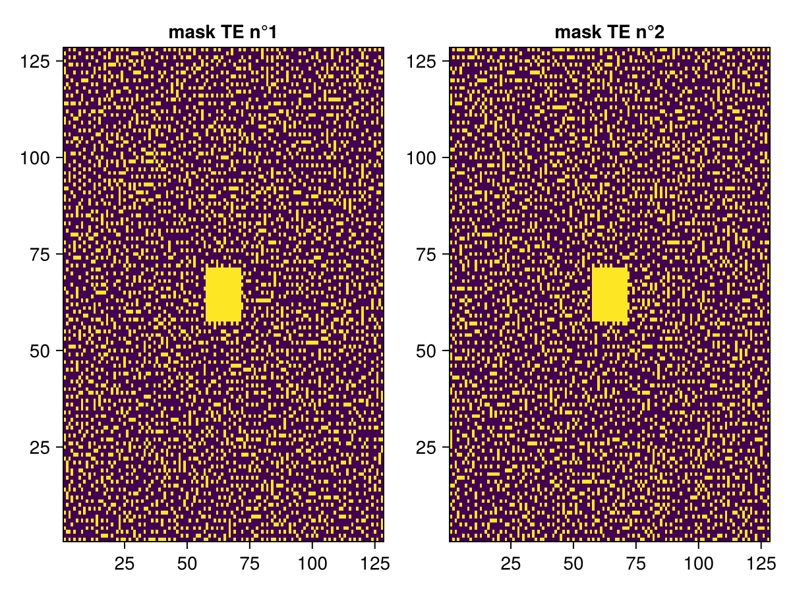
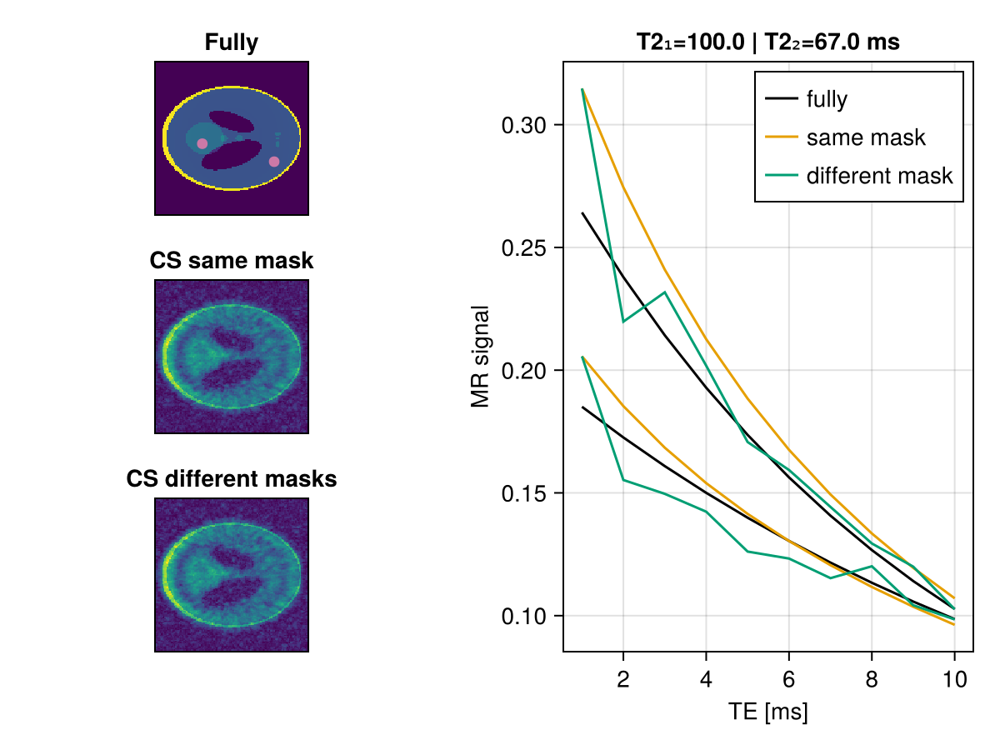
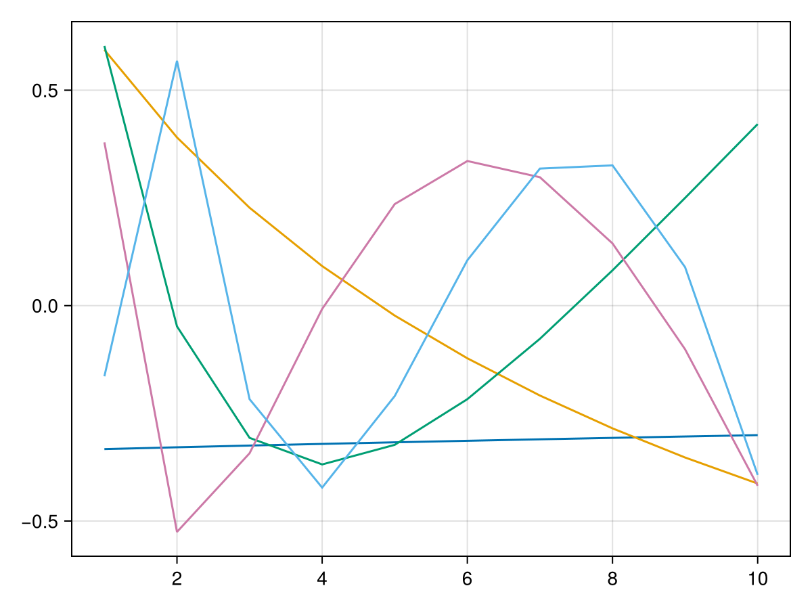
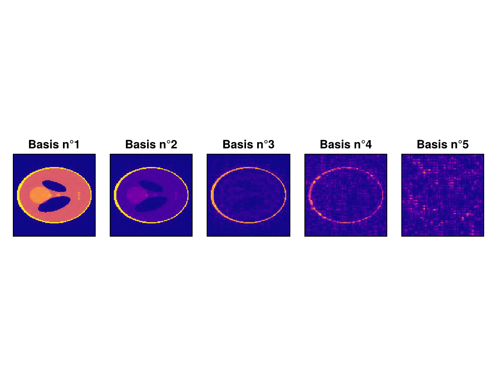
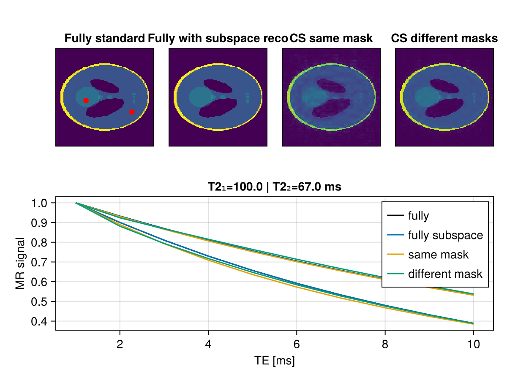

Subspace Reconstruction
Description
This example described how to perform a subspace reconstruction for $T_2$ mapping acceleration.
Setup and define global variable
using CairoMakie
using ImageUtils: shepp_logan
using LinearAlgebra
using Random
using MRIReco, MRISimulation, MRICoilSensitivities, MRISampling,MRIOperators
using MRIReco.RegularizedLeastSquares
color=Makie.wong_colors() # color for plots
N = 128
T = ComplexF32
nCh = 4
nEchos = 10
TE = 7.0
x = T.(shepp_logan(N))128×128 Matrix{ComplexF32}:
0.0+0.0im 0.0+0.0im 0.0+0.0im … 0.0+0.0im 0.0+0.0im 0.0+0.0im
0.0+0.0im 0.0+0.0im 0.0+0.0im 0.0+0.0im 0.0+0.0im 0.0+0.0im
0.0+0.0im 0.0+0.0im 0.0+0.0im 0.0+0.0im 0.0+0.0im 0.0+0.0im
0.0+0.0im 0.0+0.0im 0.0+0.0im 0.0+0.0im 0.0+0.0im 0.0+0.0im
0.0+0.0im 0.0+0.0im 0.0+0.0im 0.0+0.0im 0.0+0.0im 0.0+0.0im
0.0+0.0im 0.0+0.0im 0.0+0.0im … 0.0+0.0im 0.0+0.0im 0.0+0.0im
0.0+0.0im 0.0+0.0im 0.0+0.0im 0.0+0.0im 0.0+0.0im 0.0+0.0im
0.0+0.0im 0.0+0.0im 0.0+0.0im 0.0+0.0im 0.0+0.0im 0.0+0.0im
0.0+0.0im 0.0+0.0im 0.0+0.0im 0.0+0.0im 0.0+0.0im 0.0+0.0im
0.0+0.0im 0.0+0.0im 0.0+0.0im 0.0+0.0im 0.0+0.0im 0.0+0.0im
⋮ ⋱ ⋮
0.0+0.0im 0.0+0.0im 0.0+0.0im 0.0+0.0im 0.0+0.0im 0.0+0.0im
0.0+0.0im 0.0+0.0im 0.0+0.0im … 0.0+0.0im 0.0+0.0im 0.0+0.0im
0.0+0.0im 0.0+0.0im 0.0+0.0im 0.0+0.0im 0.0+0.0im 0.0+0.0im
0.0+0.0im 0.0+0.0im 0.0+0.0im 0.0+0.0im 0.0+0.0im 0.0+0.0im
0.0+0.0im 0.0+0.0im 0.0+0.0im 0.0+0.0im 0.0+0.0im 0.0+0.0im
0.0+0.0im 0.0+0.0im 0.0+0.0im 0.0+0.0im 0.0+0.0im 0.0+0.0im
0.0+0.0im 0.0+0.0im 0.0+0.0im … 0.0+0.0im 0.0+0.0im 0.0+0.0im
0.0+0.0im 0.0+0.0im 0.0+0.0im 0.0+0.0im 0.0+0.0im 0.0+0.0im
0.0+0.0im 0.0+0.0im 0.0+0.0im 0.0+0.0im 0.0+0.0im 0.0+0.0imsimulate MESE acquisition of a shepp logan phantom
First we need to simulate a multi-echo spin-echo phantom. The R₂ maps is based on the value of each voxel the shepp logan phantom. For the T2 we use
rmap = 0.05*abs.(x)
TEnum = Float64.(collect(TE:TE:TE*nEchos))
coilsens = T.(birdcageSensitivity(N, nCh, 4.))
params = Dict{Symbol,Any}()
params[:simulation] = "fast"
params[:trajName] = "Cartesian"
params[:numProfiles] = floor(Int64, N)
params[:numSamplingPerProfile] = N
params[:r2map] = rmap
params[:T_echo] = TEnum
params[:seqName] = "ME"
params[:refocusingAngles] = Float64.(repeat([pi], length(TEnum)))
params[:senseMaps] = coilsens
acqData = simulation(real(x), params)AcquisitionData{Float32, 2}(Dict{Symbol, Any}(), Trajectory{Float32}[Trajectory{Float32}("Cartesian", Float32[-0.5 -0.4921875 … 0.484375 0.4921875; -0.5 -0.5 … 0.4921875 0.4921875], Float32[0.0, 7.8125f-6, 1.5625f-5, 2.34375f-5, 3.125f-5, 3.9062503f-5, 4.6875f-5, 5.46875f-5, 6.25f-5, 7.0312504f-5 … 0.00092187506, 0.0009296875, 0.00093750004, 0.00094531255, 0.00095312507, 0.0009609375, 0.00096875004, 0.0009765625, 0.000984375, 0.0009921875], 0.0f0, 0.001f0, 128, 128, 1, true, false), Trajectory{Float32}("Cartesian", Float32[-0.5 -0.4921875 … 0.484375 0.4921875; -0.5 -0.5 … 0.4921875 0.4921875], Float32[0.0, 7.8125f-6, 1.5625f-5, 2.34375f-5, 3.125f-5, 3.9062503f-5, 4.6875f-5, 5.46875f-5, 6.25f-5, 7.0312504f-5 … 0.00092187506, 0.0009296875, 0.00093750004, 0.00094531255, 0.00095312507, 0.0009609375, 0.00096875004, 0.0009765625, 0.000984375, 0.0009921875], 0.0f0, 0.001f0, 128, 128, 1, true, false), Trajectory{Float32}("Cartesian", Float32[-0.5 -0.4921875 … 0.484375 0.4921875; -0.5 -0.5 … 0.4921875 0.4921875], Float32[0.0, 7.8125f-6, 1.5625f-5, 2.34375f-5, 3.125f-5, 3.9062503f-5, 4.6875f-5, 5.46875f-5, 6.25f-5, 7.0312504f-5 … 0.00092187506, 0.0009296875, 0.00093750004, 0.00094531255, 0.00095312507, 0.0009609375, 0.00096875004, 0.0009765625, 0.000984375, 0.0009921875], 0.0f0, 0.001f0, 128, 128, 1, true, false), Trajectory{Float32}("Cartesian", Float32[-0.5 -0.4921875 … 0.484375 0.4921875; -0.5 -0.5 … 0.4921875 0.4921875], Float32[0.0, 7.8125f-6, 1.5625f-5, 2.34375f-5, 3.125f-5, 3.9062503f-5, 4.6875f-5, 5.46875f-5, 6.25f-5, 7.0312504f-5 … 0.00092187506, 0.0009296875, 0.00093750004, 0.00094531255, 0.00095312507, 0.0009609375, 0.00096875004, 0.0009765625, 0.000984375, 0.0009921875], 0.0f0, 0.001f0, 128, 128, 1, true, false), Trajectory{Float32}("Cartesian", Float32[-0.5 -0.4921875 … 0.484375 0.4921875; -0.5 -0.5 … 0.4921875 0.4921875], Float32[0.0, 7.8125f-6, 1.5625f-5, 2.34375f-5, 3.125f-5, 3.9062503f-5, 4.6875f-5, 5.46875f-5, 6.25f-5, 7.0312504f-5 … 0.00092187506, 0.0009296875, 0.00093750004, 0.00094531255, 0.00095312507, 0.0009609375, 0.00096875004, 0.0009765625, 0.000984375, 0.0009921875], 0.0f0, 0.001f0, 128, 128, 1, true, false), Trajectory{Float32}("Cartesian", Float32[-0.5 -0.4921875 … 0.484375 0.4921875; -0.5 -0.5 … 0.4921875 0.4921875], Float32[0.0, 7.8125f-6, 1.5625f-5, 2.34375f-5, 3.125f-5, 3.9062503f-5, 4.6875f-5, 5.46875f-5, 6.25f-5, 7.0312504f-5 … 0.00092187506, 0.0009296875, 0.00093750004, 0.00094531255, 0.00095312507, 0.0009609375, 0.00096875004, 0.0009765625, 0.000984375, 0.0009921875], 0.0f0, 0.001f0, 128, 128, 1, true, false), Trajectory{Float32}("Cartesian", Float32[-0.5 -0.4921875 … 0.484375 0.4921875; -0.5 -0.5 … 0.4921875 0.4921875], Float32[0.0, 7.8125f-6, 1.5625f-5, 2.34375f-5, 3.125f-5, 3.9062503f-5, 4.6875f-5, 5.46875f-5, 6.25f-5, 7.0312504f-5 … 0.00092187506, 0.0009296875, 0.00093750004, 0.00094531255, 0.00095312507, 0.0009609375, 0.00096875004, 0.0009765625, 0.000984375, 0.0009921875], 0.0f0, 0.001f0, 128, 128, 1, true, false), Trajectory{Float32}("Cartesian", Float32[-0.5 -0.4921875 … 0.484375 0.4921875; -0.5 -0.5 … 0.4921875 0.4921875], Float32[0.0, 7.8125f-6, 1.5625f-5, 2.34375f-5, 3.125f-5, 3.9062503f-5, 4.6875f-5, 5.46875f-5, 6.25f-5, 7.0312504f-5 … 0.00092187506, 0.0009296875, 0.00093750004, 0.00094531255, 0.00095312507, 0.0009609375, 0.00096875004, 0.0009765625, 0.000984375, 0.0009921875], 0.0f0, 0.001f0, 128, 128, 1, true, false), Trajectory{Float32}("Cartesian", Float32[-0.5 -0.4921875 … 0.484375 0.4921875; -0.5 -0.5 … 0.4921875 0.4921875], Float32[0.0, 7.8125f-6, 1.5625f-5, 2.34375f-5, 3.125f-5, 3.9062503f-5, 4.6875f-5, 5.46875f-5, 6.25f-5, 7.0312504f-5 … 0.00092187506, 0.0009296875, 0.00093750004, 0.00094531255, 0.00095312507, 0.0009609375, 0.00096875004, 0.0009765625, 0.000984375, 0.0009921875], 0.0f0, 0.001f0, 128, 128, 1, true, false), Trajectory{Float32}("Cartesian", Float32[-0.5 -0.4921875 … 0.484375 0.4921875; -0.5 -0.5 … 0.4921875 0.4921875], Float32[0.0, 7.8125f-6, 1.5625f-5, 2.34375f-5, 3.125f-5, 3.9062503f-5, 4.6875f-5, 5.46875f-5, 6.25f-5, 7.0312504f-5 … 0.00092187506, 0.0009296875, 0.00093750004, 0.00094531255, 0.00095312507, 0.0009609375, 0.00096875004, 0.0009765625, 0.000984375, 0.0009921875], 0.0f0, 0.001f0, 128, 128, 1, true, false)], Matrix{ComplexF32}[[-0.061319664f0 + 0.017328978f0im -0.060168564f0 - 0.08990121f0im 0.15327841f0 - 0.0001885891f0im -0.044200927f0 + 0.1044693f0im; 0.1391058f0 - 0.33278483f0im 0.32951653f0 - 0.06908642f0im 0.086078465f0 + 0.24484226f0im -0.25467992f0 - 0.11161256f0im; … ; -0.24694104f0 - 2.078378f0im -0.19207771f0 - 1.8354936f0im -0.50140786f0 - 1.7342796f0im -0.5504198f0 - 2.0933352f0im; -0.3996853f0 - 1.7166493f0im -0.22616445f0 - 1.8982663f0im -0.11623302f0 - 1.6665901f0im -0.26682985f0 - 1.6083899f0im]; [-0.03628423f0 + 0.002153933f0im -0.047774702f0 - 0.07336438f0im 0.10886579f0 - 0.014143705f0im -0.032712057f0 + 0.05882424f0im; 0.11176962f0 - 0.267321f0im 0.25885117f0 - 0.07452323f0im 0.07931745f0 + 0.15332265f0im -0.16305697f0 - 0.10038005f0im; … ; -0.1628871f0 - 1.3709395f0im -0.12984452f0 - 1.2005951f0im -0.35099685f0 - 1.1324832f0im -0.37688065f0 - 1.3907237f0im; -0.25054026f0 - 1.313555f0im -0.1369214f0 - 1.4281361f0im -0.070114255f0 - 1.2801167f0im -0.16514441f0 - 1.2434531f0im]; … ; [0.012780843f0 - 0.054939546f0im -0.01557029f0 - 0.059982f0im 0.009564942f0 - 0.06516403f0im -0.0056816936f0 - 0.061399773f0im; 0.04361123f0 - 0.11495491f0im 0.083025634f0 - 0.08596647f0im 0.053073376f0 - 0.053875864f0im 0.02885972f0 - 0.07771118f0im; … ; -8.224696f-5 + 0.079463825f0im -0.007975087f0 + 0.09075473f0im -0.03178585f0 + 0.0916458f0im -0.01784581f0 + 0.059422687f0im; 0.037896313f0 - 0.3435375f0im 0.029270928f0 - 0.321761f0im 0.008713879f0 - 0.34047526f0im 0.023856506f0 - 0.35112906f0im]; [0.013366346f0 - 0.058309693f0im -0.013997305f0 - 0.061284862f0im 0.006546908f0 - 0.06791401f0im -0.004679367f0 - 0.06604436f0im; 0.04045318f0 - 0.108588666f0im 0.07515283f0 - 0.08527055f0im 0.05060868f0 - 0.059629127f0im 0.03289388f0 - 0.076441996f0im; … ; 0.0020978227f0 + 0.10772966f0im -0.006123252f0 + 0.11456853f0im -0.02387847f0 + 0.11414455f0im -0.010111928f0 + 0.08896665f0im; 0.04127978f0 - 0.30421877f0im 0.030340292f0 - 0.28008235f0im 0.0083987415f0 - 0.30143505f0im 0.025188185f0 - 0.3132364f0im];;;], [[1, 2, 3, 4, 5, 6, 7, 8, 9, 10 … 16375, 16376, 16377, 16378, 16379, 16380, 16381, 16382, 16383, 16384], [1, 2, 3, 4, 5, 6, 7, 8, 9, 10 … 16375, 16376, 16377, 16378, 16379, 16380, 16381, 16382, 16383, 16384], [1, 2, 3, 4, 5, 6, 7, 8, 9, 10 … 16375, 16376, 16377, 16378, 16379, 16380, 16381, 16382, 16383, 16384], [1, 2, 3, 4, 5, 6, 7, 8, 9, 10 … 16375, 16376, 16377, 16378, 16379, 16380, 16381, 16382, 16383, 16384], [1, 2, 3, 4, 5, 6, 7, 8, 9, 10 … 16375, 16376, 16377, 16378, 16379, 16380, 16381, 16382, 16383, 16384], [1, 2, 3, 4, 5, 6, 7, 8, 9, 10 … 16375, 16376, 16377, 16378, 16379, 16380, 16381, 16382, 16383, 16384], [1, 2, 3, 4, 5, 6, 7, 8, 9, 10 … 16375, 16376, 16377, 16378, 16379, 16380, 16381, 16382, 16383, 16384], [1, 2, 3, 4, 5, 6, 7, 8, 9, 10 … 16375, 16376, 16377, 16378, 16379, 16380, 16381, 16382, 16383, 16384], [1, 2, 3, 4, 5, 6, 7, 8, 9, 10 … 16375, 16376, 16377, 16378, 16379, 16380, 16381, 16382, 16383, 16384], [1, 2, 3, 4, 5, 6, 7, 8, 9, 10 … 16375, 16376, 16377, 16378, 16379, 16380, 16381, 16382, 16383, 16384]], (128, 128), (0.0, 0.0, 0.0))Subsampling the kspace
We need to subsample the data. We generate a sampling mask which is different for each TE.
mask = zeros(Int32,(N,N,length(TEnum)))
for echo = 1:length(TEnum)
mask_tmp = zeros(Int32,(N,N))
cal_disk = sample_poissondisk((N,N),4.0;calsize = 14,seed=echo)
mask_tmp[cal_disk] .= 1
mask[:,:,echo] = mask_tmp
end
f=Figure()
ax = Axis(f[1,1],title = "mask TE n°1")
heatmap!(ax,mask[:,:,1])
ax = Axis(f[1,2],title = "mask TE n°2")
heatmap!(ax,mask[:,:,2])
f
Let's subsample the k-space in 2 different ways :
- With the same mask along the temporal dimensions :
acqData_u - With different masks along the temporal dimensions :
acqData_u2
mask_multi2 = repeat(mask[:,:,1],1,1,1,nCh,nEchos,1);# same first mask along TE
kspace = kDataCart(acqData);
kspace = kspace .* mask_multi2;
acqData_u = AcquisitionData(kspace);
mask_multi = repeat(mask,1,1,1,nCh,1,1);
mask_multi = permutedims(mask_multi,(1,2,5,4,3,6));
kspace = kDataCart(acqData);
kspace = kspace .* mask_multi;
acqData_u2 = AcquisitionData(kspace);[ Info: The 3rd dimension is encoded as a Multi-Slice acquisition because keyword enc2D = true
[ Info: The 3rd dimension is encoded as a Multi-Slice acquisition because keyword enc2D = trueReconstruction of undersampled rawdata
params = Dict{Symbol,Any}()
params[:reconSize] = (N, N)
params[:reco] = "multiCoilMultiEcho"
params[:reg] = L2Regularization(1.e-3)
params[:iterations] = 1
params[:solver] = CGNR
params[:senseMaps] = reshape(coilsens, N, N, 1, nCh)
im_x = reconstruction(acqData, params).data # fully reconstruction
im_phant = abs.(im_x)
im_x_u = reconstruction(acqData_u, params).data # undersampling same mask
im_phant_u = abs.(im_x_u)
im_x_u2 = reconstruction(acqData_u2, params).data # undersampling different mask along TE
im_phant_u2 = abs.(im_x_u2)
p1 = (100, 45)
p2 = (40, 60)
echo=1
f = Figure()
ax = Axis(f[1, 1], aspect=1, title="Fully")
hidedecorations!(ax)
heatmap!(ax, im_phant[:, :, 1, echo, 1, 1])
scatter!(ax, p1,color=color[4])
scatter!(ax, p2,color=color[4])
ax = Axis(f[2, 1], aspect=1, title="CS same mask")
hidedecorations!(ax)
heatmap!(ax, im_phant_u[:, :, 1, echo, 1, 1])
ax = Axis(f[3, 1], aspect=1, title="CS different masks")
hidedecorations!(ax)
heatmap!(ax, im_phant_u2[:, :, 1, echo, 1, 1])
ax = Axis(f[:, 2],title = "T2₁=$(round(1/rmap[p1...],digits=0)) | T2₂=$(round(1/rmap[p2...],digits=0)) ms",xlabel = "TE [ms]",ylabel = "MR signal")
lines!(ax, im_phant[p1..., 1, :, 1, 1],color=:black,label = "fully")
lines!(ax, im_phant[p2..., 1, :, 1, 1],color=:black)
lines!(ax, im_phant_u[p1..., 1, :, 1, 1],color=color[2],label = "same mask")
lines!(ax, im_phant_u[p2..., 1, :, 1, 1],color=color[2],)
lines!(ax, im_phant_u2[p1..., 1, :, 1, 1],color=color[3],label = "different mask")
lines!(ax, im_phant_u2[p2..., 1, :, 1, 1],color=color[3])
axislegend(ax)
f
When the same mask is used along the temporal dimension, we see a standard decaying exponential curve. However the rate of decrease is biased by the PSF effect of the undersampling mask, corresponding by the same sum of others weigthed pixels.
When the mask is not the same along the temporal dimension, we observed a noisy curve close to the real exponential.
Implementation of a subspace reconstruction
Build the dictionary
We build a signal dictionary using the analytical equation :
\[S(TE) = \frac{-TE}{T2}\]
with a range of T2 from 1:1:2000 ms
function createExpBasis(TE_vec::AbstractVector{T}, T2_vec::AbstractVector{T}) where {T<:Real}
nTE = length(TE_vec)
nSimu = length(T2_vec)
expSignal = zeros(T, nSimu, nTE)
for (i, T2) in enumerate(T2_vec)
expSignal[i, :] = exp.(-TE_vec / T2_vec[i])
end
return expSignal
end
T2_vec = (1:1:2000)
sDict = createExpBasis(Float32.(TEnum), Float32.(T2_vec))2000×10 Matrix{Float32}:
0.000911882 8.31529f-7 7.58256f-10 … 4.35961f-28 3.97545f-31
0.0301974 0.000911882 2.75364f-5 2.08797f-14 6.30512f-16
0.096972 0.00940356 0.000911882 7.58256f-10 7.35295f-11
0.173774 0.0301974 0.00524752 1.44498f-7 2.511f-8
0.246597 0.0608101 0.0149956 3.37201f-6 8.31529f-7
0.311403 0.096972 0.0301974 … 2.75364f-5 8.57494f-6
0.367879 0.135335 0.0497871 0.00012341 4.53999f-5
0.416862 0.173774 0.0724398 0.000380129 0.000158461
0.459426 0.211072 0.096972 0.000911882 0.000418942
0.496585 0.246597 0.122456 0.0018363 0.000911882
⋮ ⋱
0.996492 0.992997 0.989513 0.968868 0.96547
0.996494 0.993 0.989518 0.968884 0.965487
0.996496 0.993004 0.989524 0.968899 0.965504
0.996497 0.993007 0.989529 0.968914 0.965521
0.996499 0.993011 0.989534 … 0.96893 0.965538
0.996501 0.993014 0.989539 0.968945 0.965555
0.996503 0.993017 0.989545 0.96896 0.965572
0.996504 0.993021 0.98955 0.968976 0.965589
0.996506 0.993024 0.989555 0.968991 0.965605For real application with stimulated echo we have to remove the 1st echo from the dictionary and the rawdata
Extract the subspace temporal basis
Now we can perform an svd decomposition of the signal dictionnary in order to extract the temporal basis in order to use them during the reconstruction
svd_obj = svd(sDict)
basis = Complex.(svd_obj.V)[:, 1:5]10×5 Matrix{ComplexF32}:
-0.333034+0.0im 0.593633+0.0im … 0.378921+0.0im -0.164077+0.0im
-0.32883+0.0im 0.390348+0.0im -0.525306+0.0im 0.568116+0.0im
-0.324832+0.0im 0.227168+0.0im -0.342704+0.0im -0.21721+0.0im
-0.321005+0.0im 0.0917306+0.0im -0.00770914+0.0im -0.42247+0.0im
-0.317326+0.0im -0.0231925+0.0im 0.235677+0.0im -0.209906+0.0im
-0.313777+0.0im -0.122277+0.0im … 0.335603+0.0im 0.105223+0.0im
-0.310345+0.0im -0.208751+0.0im 0.297942+0.0im 0.318069+0.0im
-0.307018+0.0im -0.284944+0.0im 0.144373+0.0im 0.325535+0.0im
-0.303787+0.0im -0.352601+0.0im -0.101427+0.0im 0.0891647+0.0im
-0.300644+0.0im -0.413064+0.0im -0.418202+0.0im -0.392987+0.0imIn this example, we will use the 5 first basis.
f=Figure()
ax = Axis(f[1,1])
for i = 1:size(basis,2)
lines!(ax,real.(svd_obj.V[:,i]))
end
f
Our supposition for the subspace reconstruction is that the MESE signal can be approximated by a linear combinaison of the 5 basis corresponding to the temporal curve.
Subspace reconstruction
In order to perform the subspace reconstruction we are using a dedicated pipeline name : params[:reco] = "multiCoilMultiEchoSubspace" and we also need to pass the basis params[:basis] = basis
Here, we also have added a Wavelet spatial regularization that will be applied on the basis coefficient maps.
params = Dict{Symbol,Any}()
params[:reconSize] = (N, N)
params[:reco] = "multiCoilMultiEchoSubspace"
params[:reg] = L1Regularization(0.001)
params[:sparseTrafo] = "Wavelet" #sparse trafo
params[:solver] = ADMM
params[:senseMaps] = reshape(coilsens, N, N, 1, nCh)
params[:basis] = basis
params[:iterations] = 1
α = reconstruction(acqData, params)
im_sub = abs.(applySubspace(α, basis))
params[:iterations] = 100
α = reconstruction(acqData_u, params)
im_sub_2 = abs.(applySubspace(α, basis))
α = reconstruction(acqData_u2, params)
im_sub_3 = abs.(applySubspace(α, basis));Coefficient maps
The reconstruction returns the coefficient maps :
f = Figure()
for i = 1:size(basis,2)
ax = Axis(f[1,i],aspect=1,title = "Basis n°$i")
heatmap!(abs.(α[:,:,1,i,1,1]),colormap=:plasma)
hidedecorations!(ax)
end
f
Virtual echo images
We need to multiply the subspace basis to the coefficient maps in order to get the virtual TE images
\[im_{TE}(i,j) = \sum_{basis=1}^{5} \alpha(i,j) \times basis'\]
which gives the following results :
begin
p1 = (100, 45)
p2 = (40, 60)
echo = 1
f = Figure()
ax = Axis(f[1, 1], aspect=1, title="Fully standard")
hidedecorations!(ax)
heatmap!(ax, im_phant[:, :, 1, echo, 1, 1])
scatter!(ax, p1,color=:red)
scatter!(ax, p2,color=:red)
ax = Axis(f[1, 2], aspect=1, title="Fully with subspace reco")
hidedecorations!(ax)
heatmap!(ax, im_sub[:, :, 1, echo, 1, 1])
ax = Axis(f[1, 3], aspect=1, title="CS same mask")
hidedecorations!(ax)
heatmap!(ax, im_sub_2[:, :, 1, echo, 1, 1])
ax = Axis(f[1, 4], aspect=1, title="CS different masks")
hidedecorations!(ax)
heatmap!(ax, im_sub_3[:, :, 1, 1, 1, 1])
ax = Axis(f[2, :],title = "T2₁=$(round(1/rmap[p1...],digits=0)) | T2₂=$(round(1/rmap[p2...],digits=0)) ms",xlabel = "TE [ms]",ylabel = "MR signal")
function scale_T2(T2vect)
return T2vect/T2vect[1]
end
lines!(ax, scale_T2(im_phant[p1..., 1, :, 1, 1]),color=:black,label = "fully")
lines!(ax, scale_T2(im_phant[p2..., 1, :, 1, 1]),color=:black)
lines!(ax, scale_T2(im_sub[p1..., 1, :, 1, 1]),color=color[1],label = "fully subspace")
lines!(ax, scale_T2(im_sub[p2..., 1, :, 1, 1]),color=color[1])
lines!(ax, scale_T2(im_sub_2[p1..., 1, :, 1, 1]),color=color[2],label = "same mask")
lines!(ax, scale_T2(im_sub_2[p2..., 1, :, 1, 1]),color=color[2])
lines!(ax, scale_T2(im_sub_3[p1..., 1, :, 1, 1]),color=color[3],label = "different mask")
lines!(ax, scale_T2(im_sub_3[p2..., 1, :, 1, 1]),color=color[3])
axislegend(ax)
f
end
Reproducibility
This page was generated with the following version of Julia:
using InteractiveUtils
io = IOBuffer();
versioninfo(io);
split(String(take!(io)), '\n')12-element Vector{SubString{String}}:
"Julia Version 1.13.3"
"Commit 67ac47b9cd8 (2026-10-25 15:28 UTC)"
"Build Info:"
" Official https://julialang.org release"
"Platform Info:"
" OS: Linux (x86_64-linux-gnu)"
" CPU: 4 × AMD EPYC 9V74 80-Core Processor"
" WORD_SIZE: 64"
" LLVM: libLLVM-20.1.8 (ORCJIT, znver4)"
" GC: Built with stock GC"
"Threads: 1 default, 1 interactive, 1 GC (on 4 virtual cores)"
""And with the following package versions
import Pkg; Pkg.status()Status `~/work/MRIReco.jl/MRIReco.jl/docs/Project.toml`
[13f3f980] CairoMakie v0.15.16
[e30172f5] Documenter v1.19.0
[7a1cc6ca] FFTW v1.10.0
[cd3eb016] HTTP v2.12.3
[8ad4436d] ImageUtils v0.2.13
[98b081ad] Literate v2.21.0
[f7771a9a] MRIBase v0.4.6 `~/work/MRIReco.jl/MRIReco.jl/MRIBase`
[c57eb701] MRICoilSensitivities v0.1.5 `~/work/MRIReco.jl/MRIReco.jl/MRICoilSensitivities`
[5a6f062f] MRIFiles v0.3.2 `~/work/MRIReco.jl/MRIReco.jl/MRIFiles`
[fb1137e3] MRIOperators v0.4.3 `~/work/MRIReco.jl/MRIReco.jl/MRIOperators`
[bdf86e05] MRIReco v0.9.2 `~/work/MRIReco.jl/MRIReco.jl`
[9be66c26] MRISampling v0.1.2 `~/work/MRIReco.jl/MRIReco.jl/MRISampling`
[8988da37] MRISimulation v0.1.4 `~/work/MRIReco.jl/MRIReco.jl/MRISimulation`
[b77e0a4c] InteractiveUtils v1.11.0This page was generated using Literate.jl.